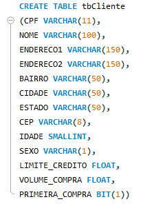
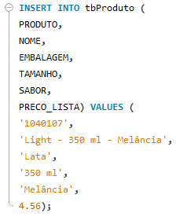
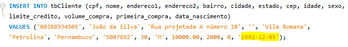
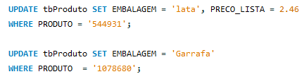
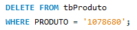
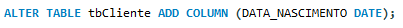
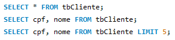
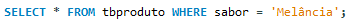
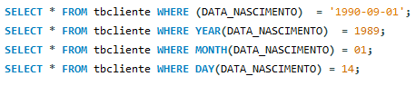
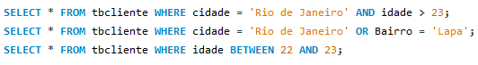

CREATE DATABASE `nome_do_banco`;

CREATE DATABASE `nome_do_banco`;
DROP DATABASE `nome_do_banco`;
Também podemos apagar o banco de dados usando assistente, para isso clicamos no banco com o botão direito e selecionamos a opção "Drop Schema"
Vá para o subdiretório c:\Program Files\MySQL\MySQL Server 8.0\bin
1- Digite o comando:
mysql -h localhost -u root -p
Tecle enter e depois inclua a senha.
2- Digite o comando:
CREATE DATABASE sucos;
Se você for conferir no Workbench veja que o banco de dados sucos foi acrescido à lista de bancos disponíveis.
3- Para executar uma consulta no banco exemplo world digite:
USE world; - ENTER - SELECT *
FROM city; - ENTER -
Onde - ENTER - significa teclar a tecla Enter.
4 - Verá que a lista de cidades são listadas.
5 - Para sair digite:
exit
CREATE TABLE nome_da_tabela"(nome_da_coluna tipo_do_dado) "
Veja o exemplo:
DROP TABLE nome_da_tabela
INSERT INTO nome_da_tabela
(nome_das_colunas)VALUES (valores_das_colunas)
Exemplo:
Exemplo 2: Inserindo campo com data
UPDATE nome_da_tabela SET nome_do_campo = 'valor', nome_do_campo
= 'valor', WHERE nome_do_campo_identificador =
'valor'
Exemplo:
DELETE FROM nome_da_tabelaWHERE nome_do_campo_identificador =
'valor'
Exemplo:
ALTER TABLE nome_da_tabela ADD PRIMARY KEY (nome_do_campo_identificador) Exemplo:

ALTER TABLE nome_da_tabelaADD COLUMN (nome_da_coluna tipo)
Exemplo:
 SELECT
*
FROM
nome_da_tabela
ou
SELECT
nome_do_campo, nome_do_outro_campo
FROM
nome_da_tabela
Exemplos:
Alias = nome diferente (e mais amigável) a uma coluna ou tabela ao realizar uma junção (join) ou retornar o resultado de uma consulta.
SELECT
nome_do_campo
AS
nome_do_alias
FROM
nome_da_tabela;
Exemplo:

SELECT
*
FROM
nome_da_tabela
WHERE
nome_do_campo_identificador = 'valor'
Exemplo:
Podemos filtrar a data completa, ou apenas pelo dia, mês e ano específicos.
Exemplos:
Podemos filtrar mais de uma informação ao mesmo tempo usando filtros compostos.
Exemplos:
